ねぇ ASIST、
今日の予定は?
今日の予定は?
今日の予定は、
こんな感じだよ
こんな感じだよ

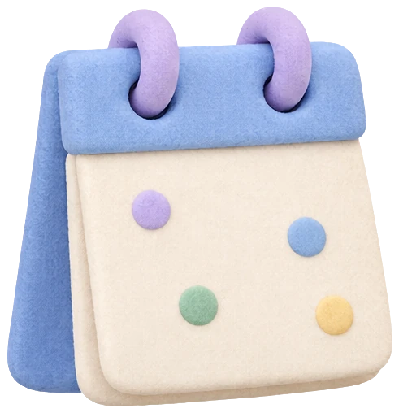
話しかけるだけで、
予定もメールも片づく。
ASIST は Mac 向けのリアルタイムアシスタント
macOS 14 以降無料・オープンソース
カード
必要な情報を、すぐに。
声で答えながら、
会話の横に並べます。
長野の天気は?
ドル円は?
返信の下書きを作って
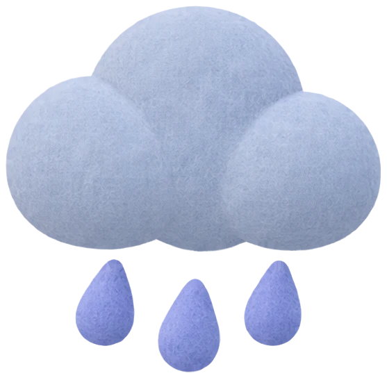
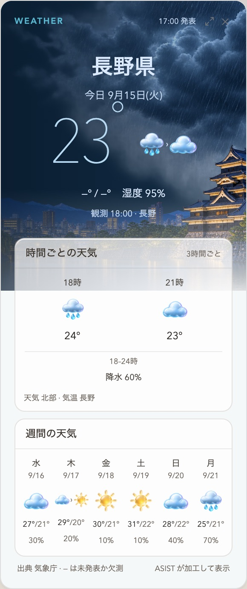
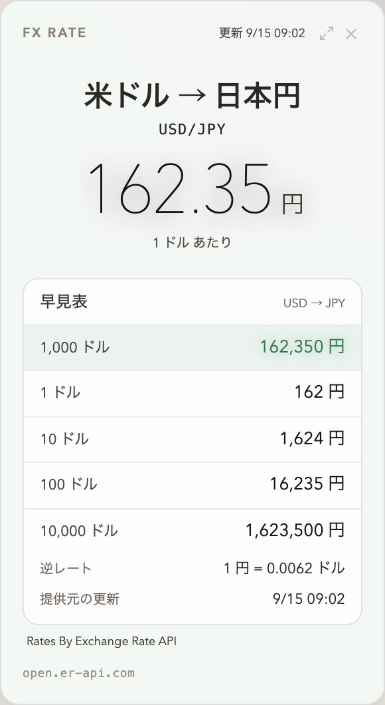
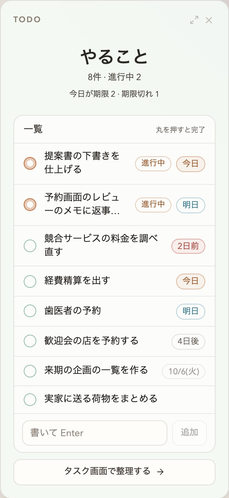
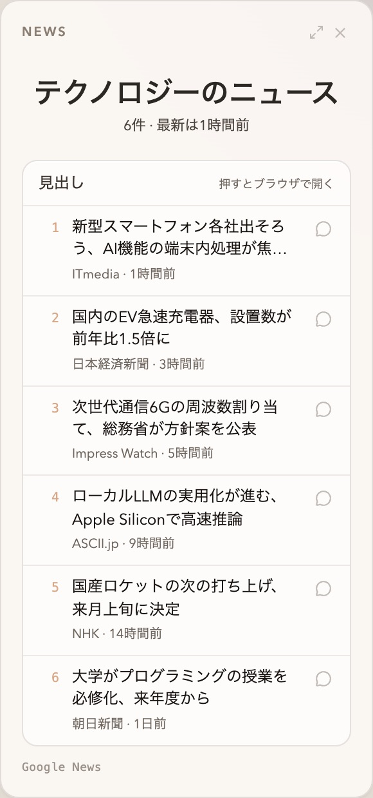
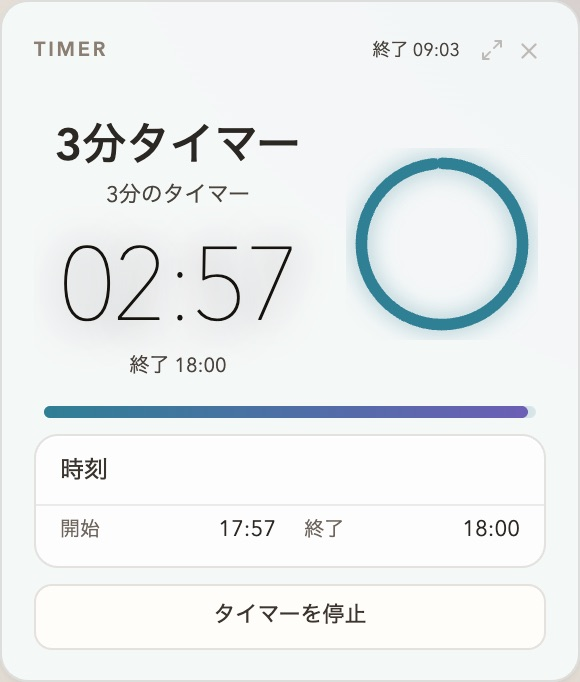
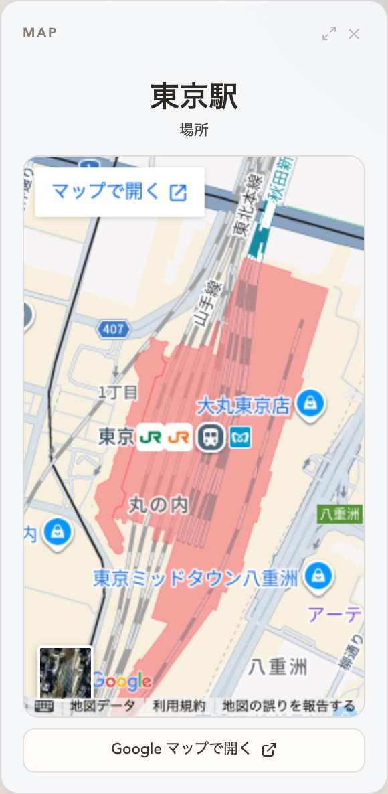
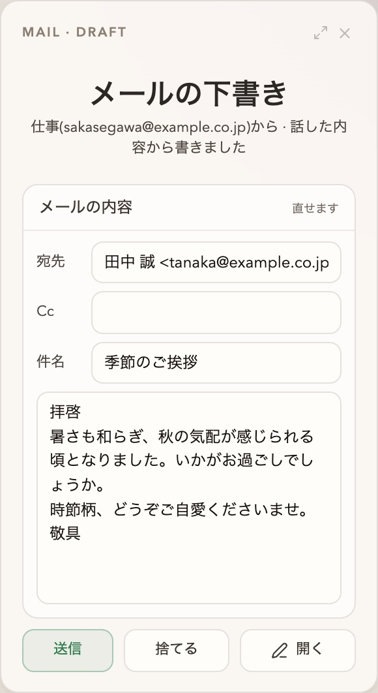
天気予定メールの下書きTo-Do為替ニュース地図タイマー
話しかけると、答えと一緒にカードが並びます。

カード
カード
声で会話
実際の
画面です
ミニアプリ
直感的に使える。
カレンダーで来週を開いて
Agent 1
1
タスク 3
3
メモ
メール 3
3
記憶
カレンダー
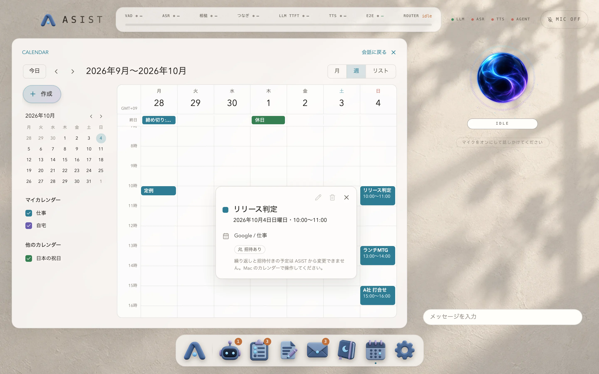

この資料、まとめておいて
Agent
面倒な仕事はすべておまかせ。
✓
Agent のジョブを始めますか?
作業場所 ~/work/report ・ 読むだけ
キャンセルジョブを始める
>_codex
✳claude
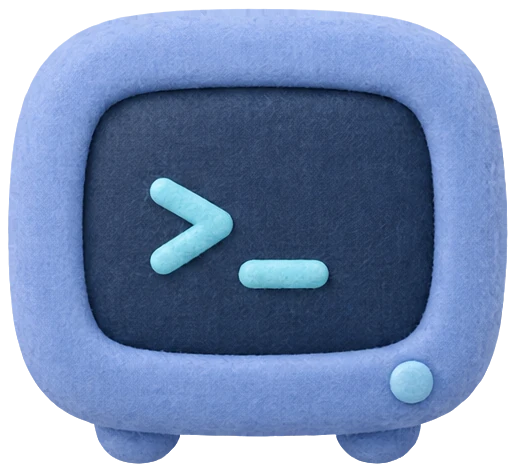
資料のまとめ
RUNNINGDONE ✓
あなたが承認してから、codex か claude の CLI に引き渡します。
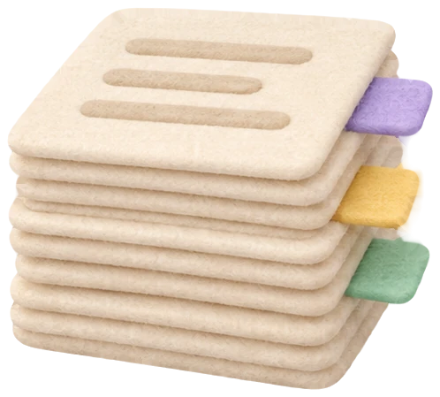
記憶 ☾23:590:00
Agent が日記を書いて記憶を整理。
日記 ・ 9月23日(水)
提案書の下書きを一緒に直した日昼過ぎに、提案書の下書きを読み上げてほしいと頼まれた。三つ目の節が前の節と同じことを言っていると気づいて、そう伝えた。
ちゃんと覚えてくれてるんだな…
日本語EnglishFrançaisDeutschहिन्दीBahasa IndonesiaItaliano한국어Português (Brasil)Español (Latinoamérica)Español (España)
11の言語で
使える。
画面も会話も、あなたの言葉で。

さあ、はじめましょう。
あなたの Mac に、ASIST を。
asist-agent.comはじめよう!